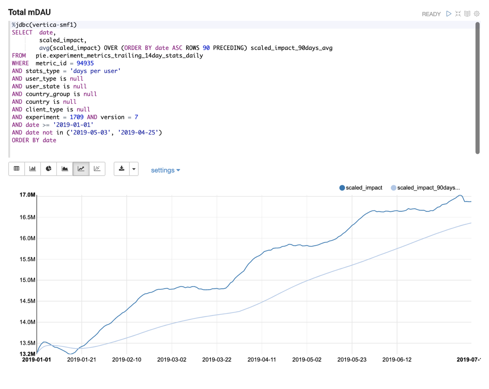
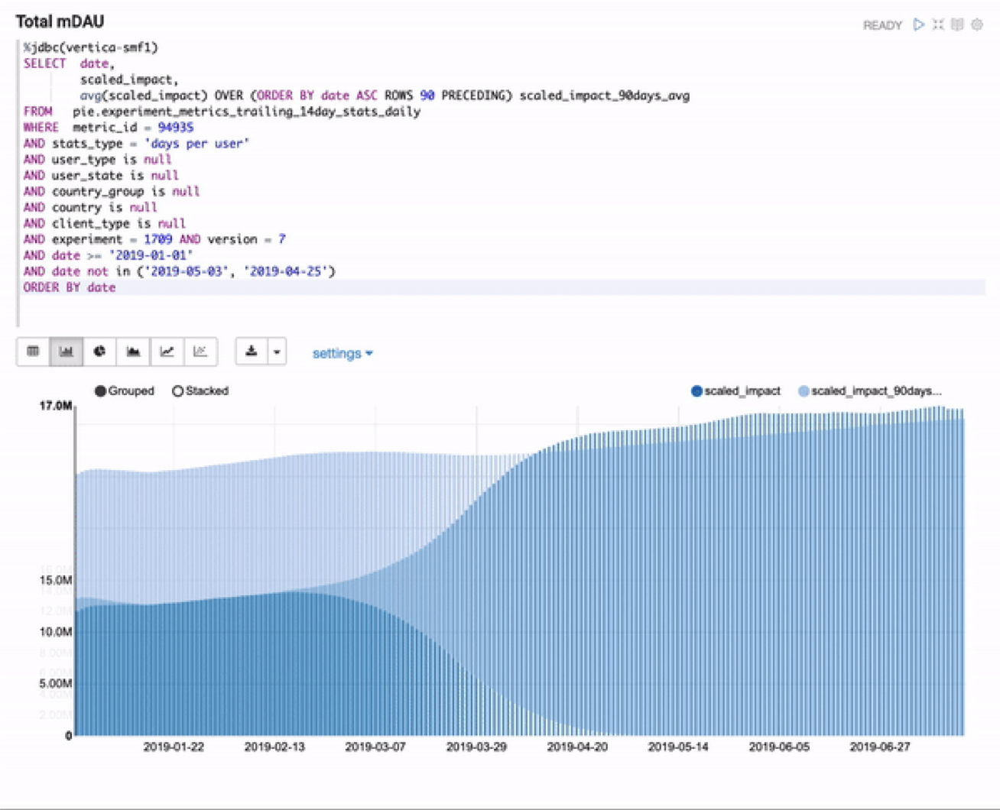
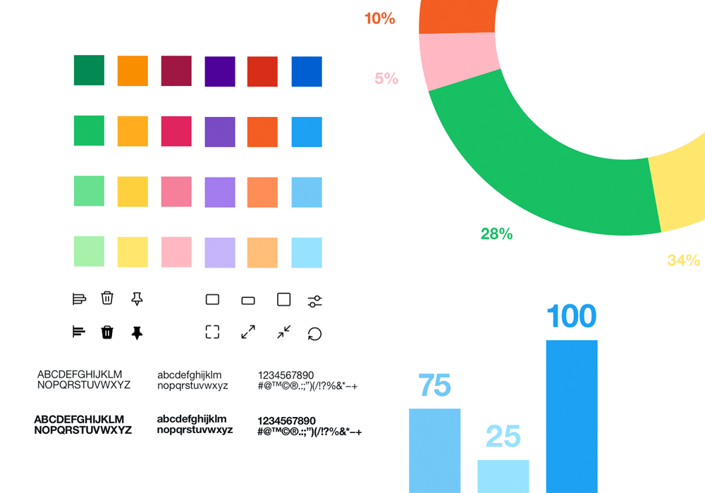
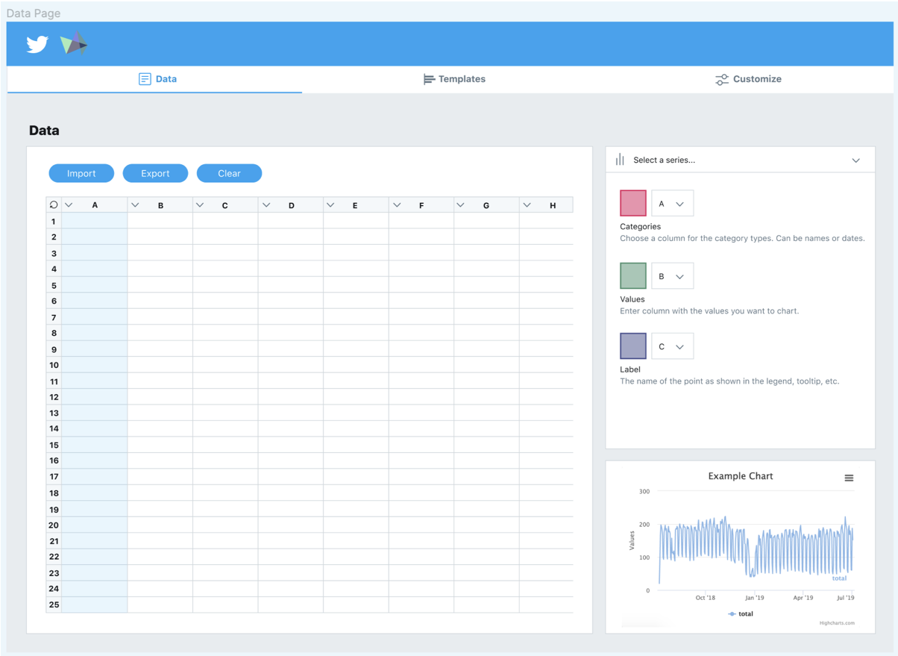
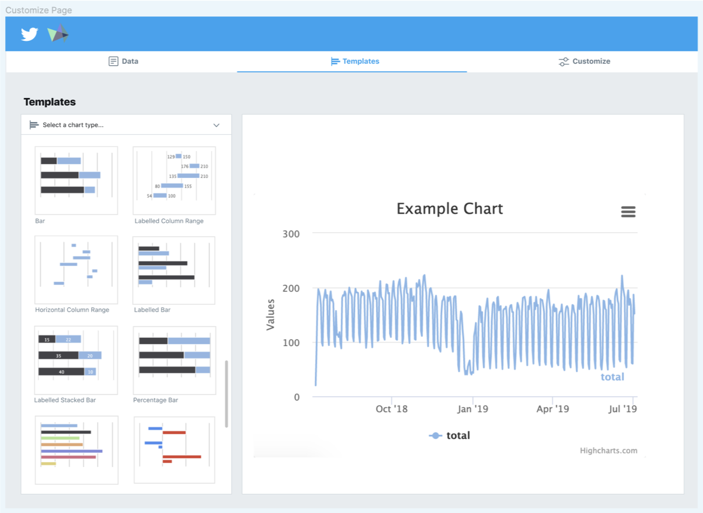
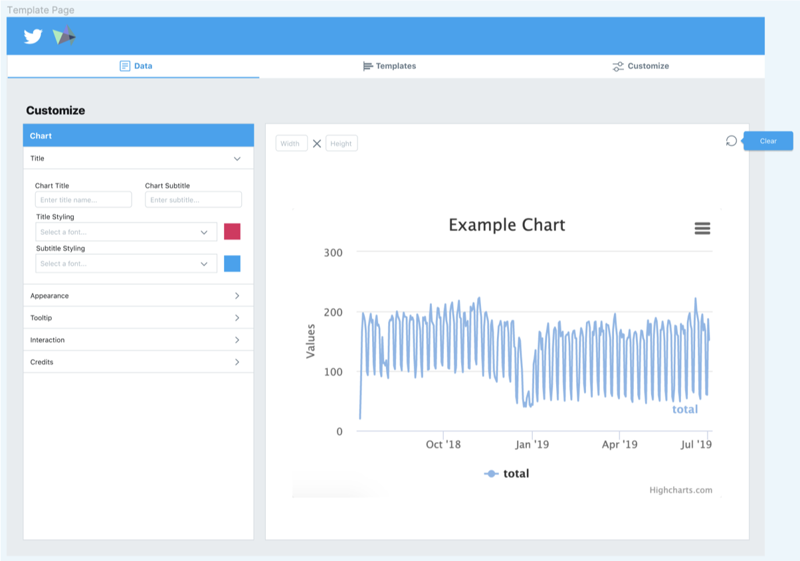
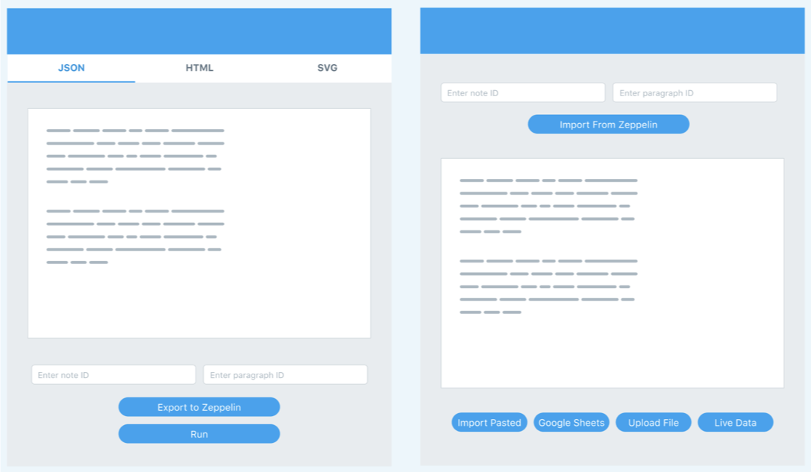
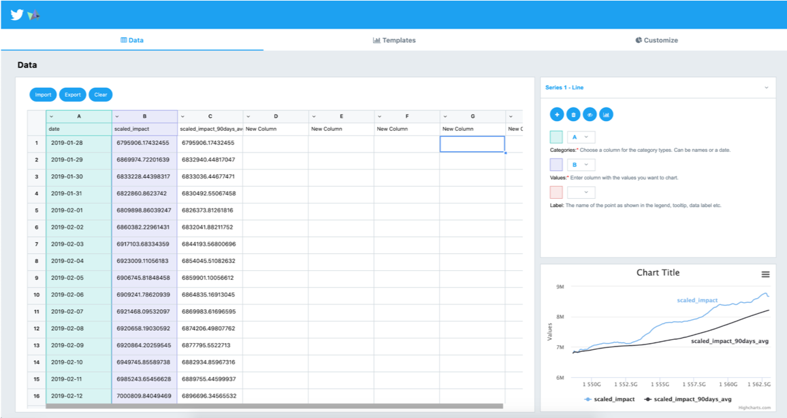
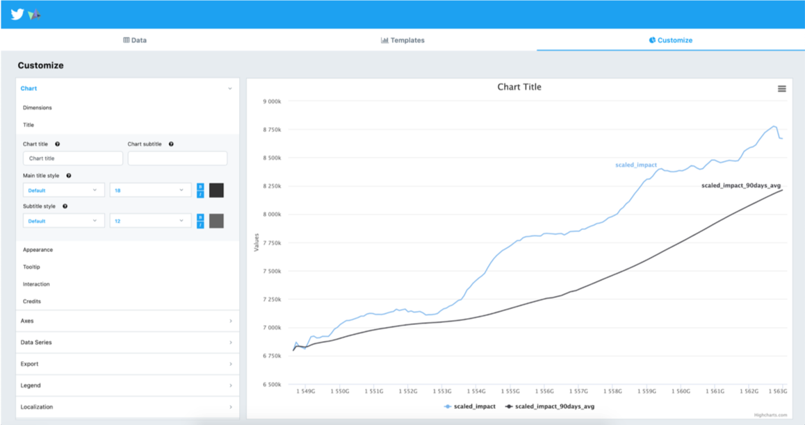

TWITTER
— Data Visualizer Redesign and Implementation
Summer 2019 | UI/UX & Web Development
During Summer 2019, I worked as a front-end software engineering intern for Twitter at their San Francisco heaquarters. I was placed on an internal team that built and monitored internal data analytics tools for Twitter's Data Science sector, and I was brought on as a front-end engineer with design experience to build and implement a better interface for charting and graphing visualizations. Over the course of my internship, I used a blend of my coding and design skills to determine the pain points of the existing product, conducted user research to better understand use cases and personas, and implemented a solution (both the interface and the functionality).
Because of the nature of my internship, I cannot make some aspects of this project public. All assets have been approved to use by Twitter.
Because of the nature of my internship, I cannot make some aspects of this project public. All assets have been approved to use by Twitter.
PROJECT SPACE & MOTIVATION
The Twitter Data Science sector uses many different tools for visualizing data, including Zeppelin, a web-based notebook and internal analytics product that is used for querying and displaying data. However, this system has many shortcomings, namely that the visualization library is not verbose, there are many buggy interactions, and the UI/UX is extremely frustrating to navigate.
There was a necessity for a more flexible and extensive data visualization & charting system in Zeppelin and a more productive and user-friendly workflow. I was tasked with creating Zeppelin-integrated visual editor that allows a user to query & pull data into the editor, turn this data into beautiful, pre-formatted charts & graphs, and customize these visualizations.
There was a necessity for a more flexible and extensive data visualization & charting system in Zeppelin and a more productive and user-friendly workflow. I was tasked with creating Zeppelin-integrated visual editor that allows a user to query & pull data into the editor, turn this data into beautiful, pre-formatted charts & graphs, and customize these visualizations.


Goals
- Build a visual chart editor that will allow users to easily edit and customize data visualizations
- Create a more user-facing, easily navigable interface
- Ability to export and render finished visualizations in Zeppelin paragraphs (with dynamic data), and integrate my system with the currently existing one
Process
- Design outline and user research
- Prototyping
- Implementation
- Critique session, stakeholder presentations, and iteration
- Final demo & user training
USER RESEARCH
By far one of the most exciting parts of this project was the fact that I could interact and interview the eventual users of this product! Because this product was internal facing and the Data Science sector of Twitter is ~100, this made receiving feedback a smooth and natural-feeling process.
To start out, I had my mentor and manager on my engineering team put me in contact with users of Zeppelin and other data scientists. This initial group consisted of users unfamiliar with Zeppelin, power users of the system, those who had effectively given up on the current visualization UI, etc. I came up with quantitative and qualitative questions to garner pain points and bright spots, their wants and needs, and use cases. I also had some users participate in in-depth interviews, and worked with them one-on-one to ideate their ideal visualization systems (including functionality and interaction).
A few common points stood out to me. Many were concerned about more functional issues, such as bugs or limited graph options. However, the vast majority had issues mainly with the UI. The process of selecting a graph or chart type was complicated and hard to change. Additionally, the interactions for customizing visualizations were frustrating — many involved dragging and dropping a property (which would oftentimes error, and not tell the user until after they finished customizing) and then giving it some value. Finally, interacting with data in table form was limited and not as flexible as the data scientists would like. With these concerns in mind, I proceeded into prototyping the interface.
PROTOTYPING
Lo-Fi Prototyping
I am unable to share my ideation and paper prototypes, but I mocked up variations of the current interface and invited data scientists to participate in a prototype testing session.
Assets

Unlike many projects I've worked on before, Twitter has an extensive design language and library. I reached out to both designers (both interns and full time employees) to gain access to these assets and was trained in how to use the prototyping stack in order to create my designs, and had several informal critiques to further improve my design. This was an exciting opportunity for me to learn how to use assets that already existed, and bypass my own design habits to create a product in line with Twitter's design standards. Learning how to integrate feedback from non-stakeholders was also a plus.
Hi-Fi Prototyping




RESULTS
Final Product



UI/UX Redesign Improvements
My goal with the final redesign of the visual editor was to make it as visually engaging and user-friendly as possible. Much of the data science sector does not have extensive experience with coding or the hidden functionality behind data visualizations, so I wanted to ensure that I "wrap" the functionality in uncomplicated UI elements. Additionally, because learning a new system and interactions can be daunting, I relied on familiar and standard interactions/design when possible (whether Twitter standards or general standards) to make the interface more learnable and retainable.
One highlight of my design is the use of tabs and switching during the visualization creation process instead of the nesting that was used in the Zeppelin interface. This way, users can have all salient functionality accessible to them upfront.
Additionally, I switched customization options from dragging and dropping (which was both inefficient and a hindrance) to more appropriate options like text inputs, color palette selectors, sliders, and buttons. To allow users to more quickly switch between graph and chart types, I created a sorting and filtering system based on a user-selected dropdown. In redesigning the way in which users can import data, I built new pop-up interactions that, when finished, would populate a table-based data editor (similar to Google Sheets or Excel). Lastly, I made sure there was some degree of responsiveness!
Functionality Improvements

- 10x more charting options
- Customization options
- Multiple renderings per visualization
- Unlimited visualizations per query
- Dynamic data and persistence!
- Contextual “zooming in” & paring
CONCLUSION
With this project, I gained a much more in-depth understanding of utilizing company and brand assets & technologies, acting as a cross-functional designer and refining my design process from conception to implementation, and working directly with stakeholders and users.
Some of the challenges I faced were navigating balance between supporting too much functionality (which could have lead to overcomplicated and unintuitive design), as well as determining how to integrate this new redesign with already existing UI within the product.
One of the biggest take-aways I gained was to always keep an open mind and being flexible, especially to new ideas or requests that come from user bases, managers, or stakeholders. I also learned how valuable iteration can be, especially when that iteration comes from critique sessions with both designers and other collaborators. Being able to produce a product that would make an impact on Twitter's data science sector was such a valuable and rewarding experience!
Some of the challenges I faced were navigating balance between supporting too much functionality (which could have lead to overcomplicated and unintuitive design), as well as determining how to integrate this new redesign with already existing UI within the product.
One of the biggest take-aways I gained was to always keep an open mind and being flexible, especially to new ideas or requests that come from user bases, managers, or stakeholders. I also learned how valuable iteration can be, especially when that iteration comes from critique sessions with both designers and other collaborators. Being able to produce a product that would make an impact on Twitter's data science sector was such a valuable and rewarding experience!